class: center, middle # Reasoning LLMs ## Foundations · the DeepSeek R1 Paper · Working with Them Lucas Soares · O'Reilly Live Training --- # Agenda **1. Foundations** — what reasoning LLMs are, the 2026 landscape, when & how to use them -- **2. The DeepSeek R1 Paper** — an interactive walkthrough, and we rebuild it in code -- **3. Working with Reasoning Models** — the practical API & engineering half ??? Three movements: the idea, the training recipe (paper + from-scratch notebook), and the day-job of shipping these models. --- class: center, middle <div style="font-size: 4em; color: #ddd; font-family: 'IBM Plex Sans';">01</div> # Foundations *What they are, the landscape, when & how to use them* ??? Visual-first. Most slides are one image + one line — narrate the rest. Arc: what is reasoning → seeing it in the wild → the landscape → when to use → how to prompt. --- ## What do we mean by "reasoning"? **Recall** — look something up: <div style="background: #FEF8E6; border: 2px solid #000000; border-radius: 0px; padding: 16px; margin-top: 8px;"> "What's the course code for Stanford's Transformers class?" → CME 295 </div> **Reasoning** — work it out: <div style="background: #FEF8E6; border: 2px solid #000000; border-radius: 0px; padding: 16px; margin-top: 8px;"> "A bear was born in 2020. How old in 2025?" → 2025 − 2020 = <strong>5</strong> </div> Reasoning = solving a problem through a **multi-step process**, not a single lookup. ??? Source framing: Stanford CME295 Fall 2025, Lecture 6. No agreed formal definition — this is the working one. --- ## What is a reasoning LLM? <p>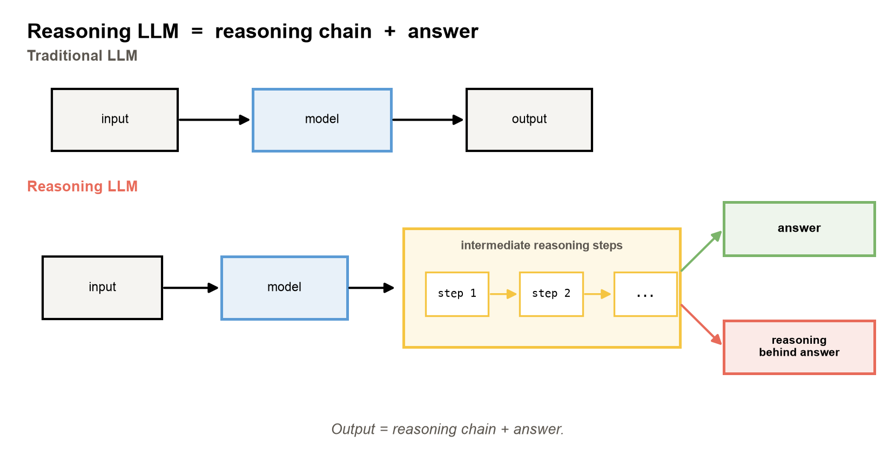</p> <div style="background: #FEF8E6; border: 2px solid #000000; border-radius: 0px; padding: 16px; margin-top: 8px; text-align: center;"> The output contract changes: <strong>Output = reasoning chain + answer.</strong> </div> --- ## You've already seen this — for real <p>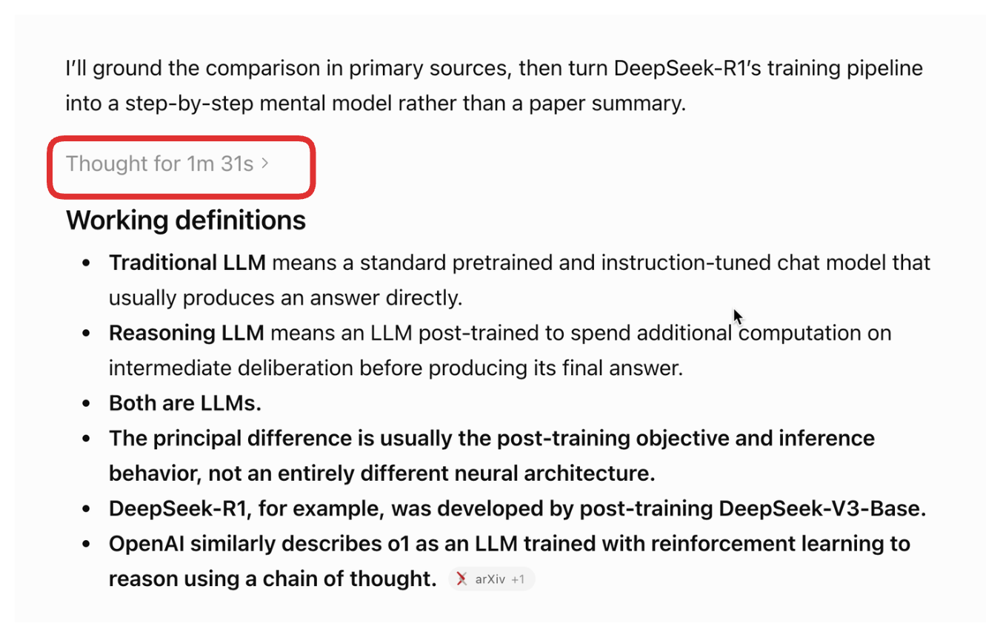</p> <p class="src">A real ChatGPT answer: it <strong>"Thought for 1m 31s"</strong> before writing a word. The thinking pill is the tell — ChatGPT, Claude, Gemini, DeepSeek all show it.</p> ??? This is an actual product screenshot, not a diagram. Click the "Thought for 1m 31s" pill live in class if you have a session — the model deliberates, then answers. The raw chain is summarized in the UI (barely-readable, and exposed chains could train rivals). --- ## How we got here <p>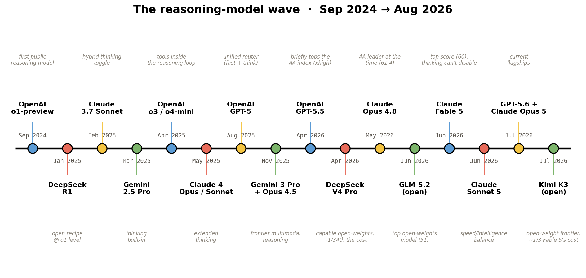</p> <div style="background: #FEF8E6; border: 2px solid #000000; border-radius: 0px; padding: 12px; margin-top: 4px; text-align: center;"> o1-preview kicked it off (Sep 2024). DeepSeek-R1 (Jan 2025) made the <strong>recipe public</strong>. By 2026 every flagship reasons. </div> --- ## Where the models rank today <p>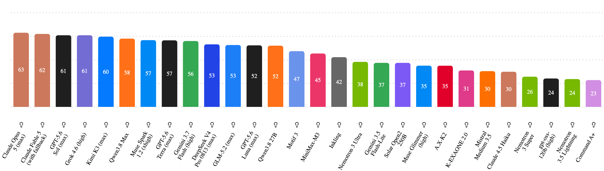</p> <p class="src"><strong>Artificial Analysis Intelligence Index v4.1.1</strong> — the top of the board is a cluster of reasoning models (⚡ = reasoning). <em>Live: <a href="https://artificialanalysis.ai/models" style="color:#5C5750;">artificialanalysis.ai/models</a></em></p> ??? Screenshot captured live from artificialanalysis.ai. The frontier is tightly packed — a few points separate the leaders. --- ## The gap is closing <p>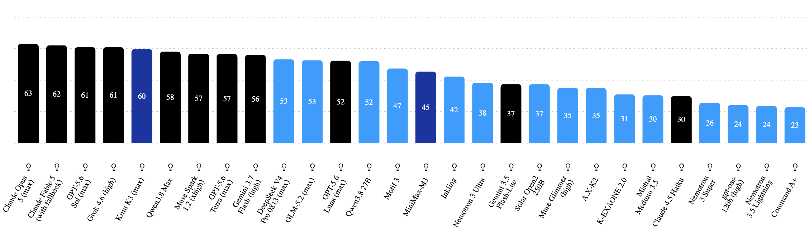</p> <p class="src"><span style="color:#000;">■ Proprietary</span> <span style="color:#1f4fd8;">■ open-weights</span> — open models (blue) now sit <strong>right among the proprietary leaders</strong>. Months behind, not years. <em>Source: artificialanalysis.ai</em></p> ??? Same Intelligence Index, colored by openness. Open-weights reasoning models (Kimi K3, DeepSeek V4, Qwen, GLM) are interleaved with the closed frontier. --- ## What actually matters when you pick one <div style="display: grid; grid-template-columns: 1fr 1fr; gap: 12px 24px; margin: 16px 0;"> <div><strong>1 · Intelligence / reasoning quality</strong><br><span style="font-size:13px;color:#5C5750;">composite score — note it's agentic-weighted</span></div> <div style="background:#EEF5EC;padding:2px 8px;border:2px solid #000;"><strong>2 · Tool-use & agentic ability</strong> <span style="font-size:12px;">NEW</span><br><span style="font-size:13px;color:#5C5750;">now the largest slice of "intelligence"</span></div> <div style="background:#EEF5EC;padding:2px 8px;border:2px solid #000;"><strong>3 · Reliability & instruction-following</strong> <span style="font-size:12px;">NEW</span><br><span style="font-size:13px;color:#5C5750;">pass@1, low hallucination</span></div> <div><strong>4 · Cost — per <em>task</em>, not per token</strong><br><span style="font-size:13px;color:#5C5750;">reasoning emits far more billed tokens</span></div> <div><strong>5 · Speed — split in two</strong><br><span style="font-size:13px;color:#5C5750;">output tokens/sec vs latency (TTFT)</span></div> <div><strong>6 · Context window</strong><br><span style="font-size:13px;color:#5C5750;">RAG / long-document workloads</span></div> </div> <div style="background: #FBEAE7; border: 2px solid #000000; padding: 10px; margin-top: 4px; font-size: 14px;"> Updated from the old "quality · price · knowledge · speed · context" list: <strong>tool-use</strong> and <strong>reliability</strong> now dominate, and "built-in knowledge" folds into #1/#3 as retrieval becomes the default. </div> <p class="src">Adapted from the Artificial Analysis Intelligence Index methodology v4.1.1 (agentic 34% · coding 24% · sci-reasoning 24% · general 18%, scored pass@1). <a href="https://artificialanalysis.ai/methodology/intelligence-benchmarking" style="color:#5C5750;">source</a></p> ??? Research-backed update: the deck used to teach 5 axes. The live AA methodology is dominated by agentic (34%) + coding (24%), so tool-use is now the single biggest component and reliability (pass@1 + hallucination penalties) deserves its own line. Price should be measured per task. --- ## Why does thinking longer help? <p>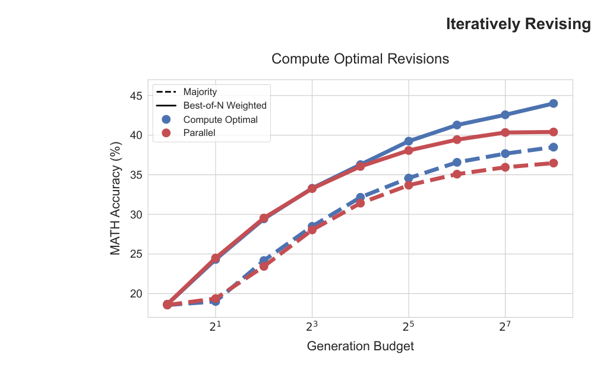</p> <p class="src">Every generated token is another forward pass — reasoning tokens <strong>buy compute</strong> before the model commits.</p> --- ## The simplest version of the trick <p>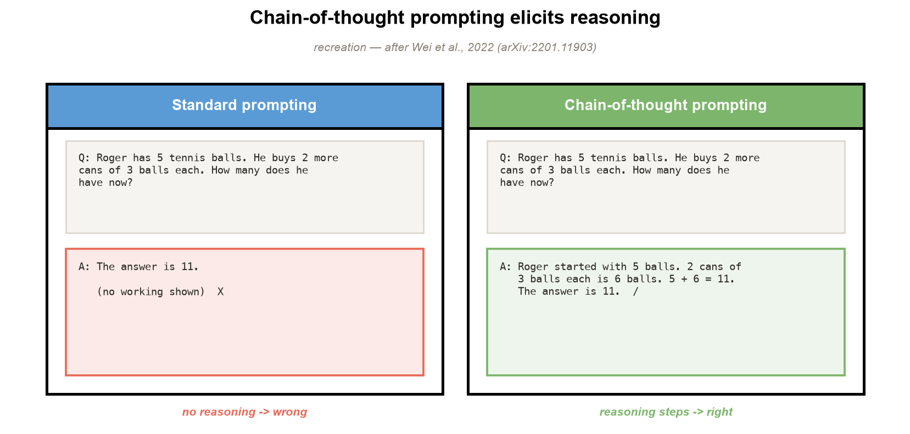</p> <p class="src">Chain-of-thought: show the working, get the answer right. Scaled up, this <em>is</em> the core idea. <em>(after Wei et al., 2022 · arXiv:2201.11903)</em></p> ??? This is the Chain-of-Thought Prompting figure (Wei et al., 2022). Standard prompting answers directly and misses; CoT writes the intermediate steps and lands it. (The "let's think step by step" phrasing is from a *different* paper — Kojima et al., zero-shot reasoners — so we don't attribute it here.) --- ## Two reasons a reasoning chain helps 1. **Decomposition** — break a problem the model has never seen into sub-problems it *has*. 2. **More compute** — more tokens before the answer = more computation spent on it. <div style="background: #FEF8E6; border: 2px solid #000000; border-radius: 0px; padding: 16px; margin-top: 40px;"> Extended chains and self-correction ("wait, that's wrong…") <strong>emerge from RL</strong>, not just from prompting. </div> --- ## When to use one — and when not to <div style="display: grid; grid-template-columns: 1fr 1fr; gap: 24px; margin: 20px 0;"> <div style="background: #EEF5EC; padding: 14px; border: 2px solid #000000;"> <h4 style="margin-top:0;color:#000;">Strong fit → reach for it</h4> <ul style="font-size:14px;margin:0;padding-left:18px;"> <li>Ambiguous, multi-step problems</li> <li>Long / dense document analysis</li> <li>Agentic planning & strategy</li> <li>Multi-file coding & debugging</li> <li>Visual reasoning · LLM-as-judge · hard math</li> </ul> </div> <div style="background: #FBEAE7; padding: 14px; border: 2px solid #000000;"> <h4 style="margin-top:0;color:#000;">Poor fit → use a plain model</h4> <ul style="font-size:14px;margin:0;padding-left:18px;"> <li>Fact lookup & retrieval</li> <li>Classification & routing</li> <li>Format conversion</li> <li>Latency-sensitive UX</li> <li>Long-output generation (cost)</li> </ul> </div> </div> <div style="background: #FEF8E6; border: 2px solid #000000; padding: 10px; font-size: 14px;"> Pattern: <strong>reasoning model plans, cheaper model executes.</strong> Default: <em>"when in doubt, respond directly"</em> — don't turn thinking on reflexively. </div> <p class="src">Synthesized from OpenAI, Anthropic & Google reasoning guides. Hard cost/latency numbers: our reproducibility notebook.</p> ??? All three providers agree: reasoning trades speed + cost for accuracy. Match effort to task complexity rather than always maxing it. --- ## How to prompt a reasoning model — 1/3: universal principles - Keep it **short, direct, goal-oriented** — these models reward clarity, not verbosity - **Don't hand-write the reasoning** — say *"think thoroughly,"* not *"think step by step"* - State **success criteria + hard constraints** up front (role → goal → constraints) - Set depth with the **effort/thinking dial**, not with prompt padding - **Zero-shot first**; add a few structured examples only if needed <div style="background: #E8F1F9; border: 2px solid #000000; padding: 10px; margin-top: 12px; font-size: 14px;"> The reasoning is now the model's job. Your job is a crisp brief. </div> <p class="src">OpenAI reasoning best-practices · Anthropic extended-thinking tips · Gemini 3 guide.</p> ??? "Think step by step" is redundant (OpenAI) and inferior to "think thoroughly" (Anthropic) for internally-reasoning models. --- ## How to prompt — 2/3: what a good prompt looks like <div style="display:grid; grid-template-columns: 0.85fr 1.15fr; gap:20px; margin-top:14px;"> <div> <p style="font-weight:700;margin:0 0 8px;">The shape</p> <div style="background:#E8F1F9;border:2px solid #000;padding:14px;font-size:14px;line-height:1.9;"> <strong>Role</strong> — who the model is<br> <strong>Goal</strong> — the outcome, not the steps<br> <strong>Constraints</strong> — hard rules & scope<br> <strong>Success criteria</strong> — what "done" means </div> <p style="font-size:13px;color:#5C5750;margin-top:10px;">Direct · goal-first · zero-shot.<br>Set <em>depth</em> with the effort dial, not the prompt.</p> </div> <div> <p style="font-weight:700;margin:0 0 8px;">Applied</p> <div style="background:#FEF8E6;border:2px solid #000;padding:14px;font-family:'JetBrains Mono';font-size:12.5px;line-height:1.6;"> <span style="color:#5B9BD5;"># role</span><br> You are a senior tax analyst.<br> <span style="color:#5B9BD5;"># goal</span><br> Find every deduction this 2024 US filing qualifies for.<br> <span style="color:#5B9BD5;"># constraints</span><br> - cite the IRS form + line for each<br> - flag anything ambiguous; don't guess<br> <span style="color:#5B9BD5;"># success</span><br> A table an accountant could file from. </div> </div> </div> <p class="src">Notice what's <em>absent</em>: no "think step by step", no hand-written reasoning — that's the model's job.</p> --- ## How to prompt — 3/3: anti-patterns <table style="width:100%; font-size:14.5px; border:2px solid #000; margin-top:8px;"> <tr style="background:#000;color:#fff;"><th style="padding:8px;text-align:left;width:48%;">✗ Don't</th><th style="padding:8px;text-align:left;">✓ Do instead</th></tr> <tr><td style="padding:8px;border:1px solid #000;background:#FBEAE7;">Hand-write "think step by step"</td><td style="padding:8px;border:1px solid #000;background:#EEF5EC;">Let it reason — say "think thoroughly"</td></tr> <tr><td style="padding:8px;border:1px solid #000;background:#FBEAE7;">Contradict yourself ("detailed" + "concise")</td><td style="padding:8px;border:1px solid #000;background:#EEF5EC;">One clear directive; separate concerns</td></tr> <tr><td style="padding:8px;border:1px solid #000;background:#FBEAE7;">Lower Gemini 3's temperature to reason</td><td style="padding:8px;border:1px solid #000;background:#EEF5EC;">Keep temperature at 1.0</td></tr> <tr><td style="padding:8px;border:1px solid #000;background:#FBEAE7;">"Always double-check" on newest Opus</td><td style="padding:8px;border:1px solid #000;background:#EEF5EC;">Trust its self-verification; don't nag</td></tr> <tr><td style="padding:8px;border:1px solid #000;background:#FBEAE7;">Max effort on every simple task</td><td style="padding:8px;border:1px solid #000;background:#EEF5EC;">Match effort to task complexity</td></tr> </table> <p class="src">Each "don't" costs tokens, latency, or quality for no gain. (API params & deprecated knobs → Section 3.)</p> --- ## You're not prompting a model — you're prompting an agent <p>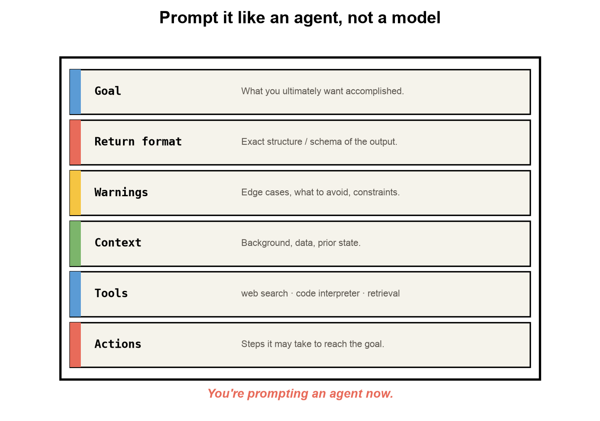</p> <p class="src">Goal · return format · context · tools · actions. Modern reasoning systems route and act — this framing still holds. <em>(confirmed against 2026 provider agent guides)</em></p> ??? Cross-checked: agentic framing is current best practice. All three providers document reasoning models as planners/agents; tool-use is the dominant Intelligence-Index component. Slide stays. --- class: center, middle <div style="font-size: 4em; color: #ddd; font-family: 'IBM Plex Sans';">02</div> # The DeepSeek R1 Paper *An interactive walkthrough — and we rebuild it in code* <p style="font-size: 15px; color: #5C5750; margin-top: 8px;">arxiv.org/pdf/2501.12948</p> --- ## Why this paper matters <div style="background: #FEF8E6; border: 2px solid #000000; border-radius: 0px; padding: 24px; margin-top: 24px; text-align: center; font-size: 20px;"> Open weights + an <strong>open recipe</strong> for o1-level reasoning. </div> --- class: center, middle <h1><span style="background-color: #7CB56B; color: #FFFFFF; padding: 8px 16px;">DEMO — two ways to train an LLM, overlaid</span></h1> <p style="margin-top: 16px; font-size: 15px; color: #5C5750;"><code>guide/training-overlay.html</code></p> <p style="margin-top: 16px; font-size: 18px;">Open the overlay: the <strong>same pretrained base</strong> → the paths diverge. <strong>Top:</strong> Llama-2 chat (RLHF + PPO). <strong>Bottom:</strong> DeepSeek-R1 (GRPO + verifiable rewards).</p> <p style="margin-top: 12px; font-size:14px; color:#5C5750;"><strong>Recap:</strong> the fork is at SFT (human QA vs long CoT); the deepest change is the <strong>reward</strong> — learned preference model + PPO critic <em>vs</em> rule-based verifiable rewards + GRPO with no critic.</p> ??? This overlay is the anchor for the whole section. Open the standalone HTML in a browser — it has a light/dark toggle and the full comparison table. --- ## Interactive walkthrough of the paper <div style="background: #E8F1F9; border: 2px solid #000000; border-radius: 0px; padding: 20px; margin-top: 16px;"> <h3 style="margin-top:0;">📖 Open the guide → <code>guide/reasoning-training-guide.html</code></h3> <p style="font-size:15px;margin:8px 0 0;">A self-contained, interactive artifact that merges a <strong>pedagogical explanation</strong> with the <strong>paper itself</strong> — step through R1-Zero vs R1, the multi-stage pipeline, GRPO, and the embedded paper figures.</p> </div> The rest of this section walks the same pipeline — and we **rebuild each stage in code**. <p class="src">Notebook: <code>notebooks/01_build_a_reasoning_model_r1_from_scratch.ipynb</code> — one toy task (1-digit addition), one metric (pass-rate) climbing through every stage.</p> ??? Give students a few minutes to click through the interactive guide, then narrate the key concept slides that follow. The from-scratch notebook mirrors this section stage-for-stage. --- ## How do you train a model to *think*? You don't write the reasoning for it. You **incentivize** it: - Show a few examples of **thinking through** a problem (cold-start) - Then **reward** the behavior you want with RL: - did it get the answer **right**? (accuracy) - did it use the **`<think>` markers**? (format) - did it **stay in one language**? (consistency) <div style="background: #FEF8E6; border: 2px solid #000000; border-radius: 0px; padding: 16px; margin-top: 16px;"> No human writes the chains. The model discovers them. </div> --- ## The trick: verifiable rewards For math and code you can **check the answer automatically** — no learned reward model, no human rater in the loop. - Math → compare to the parsed ground-truth number - Code → run the **unit tests** <div style="background: #FEF8E6; border: 2px solid #000000; border-radius: 0px; padding: 16px; margin-top: 16px;"> A cheap, unhackable signal is what makes pure-RL reasoning possible. </div> --- ## R1-Zero vs R1 <div style="display: grid; grid-template-columns: 1fr 1fr; gap: 24px; margin: 32px 0;"> <div style="background: #FBEAE7; padding: 16px; border: 2px solid #000000; border-radius: 0px;"> <h4 style="margin-top: 0; color: #000000;">R1-Zero</h4> <p style="font-size: 15px; color: #2A2825;">Pure RL on a base model, no SFT. Works — but ugly, language-mixed outputs.</p> </div> <div style="background: #EEF5EC; padding: 16px; border: 2px solid #000000; border-radius: 0px;"> <h4 style="margin-top: 0; color: #000000;">R1</h4> <p style="font-size: 15px; color: #2A2825;">Add a small cold-start SFT + a second SFT pass. Same skill, readable.</p> </div> </div> --- ## The "aha moment" <p>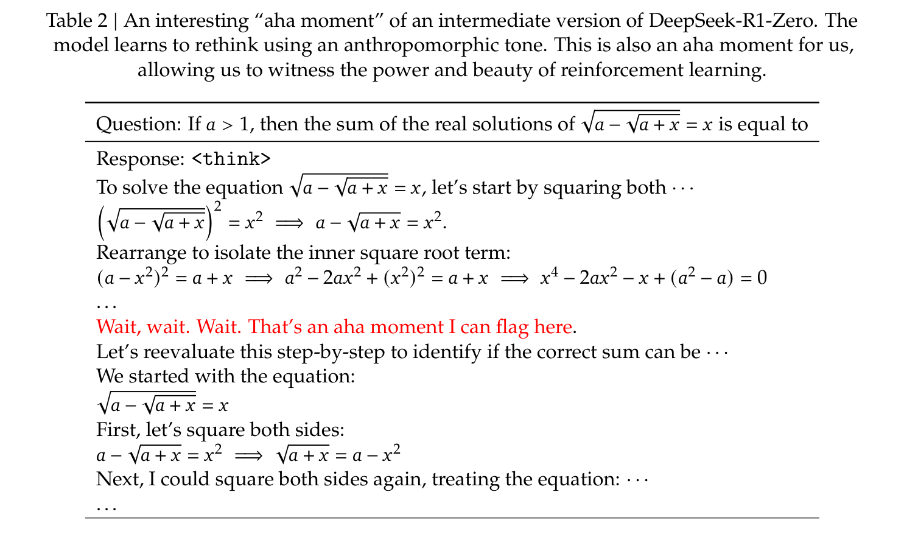</p> ??? Cropped from DeepSeek R1 paper (arxiv 2501.12948), Table 2. Self-correction emerges from RL. --- ## Accuracy curve <p>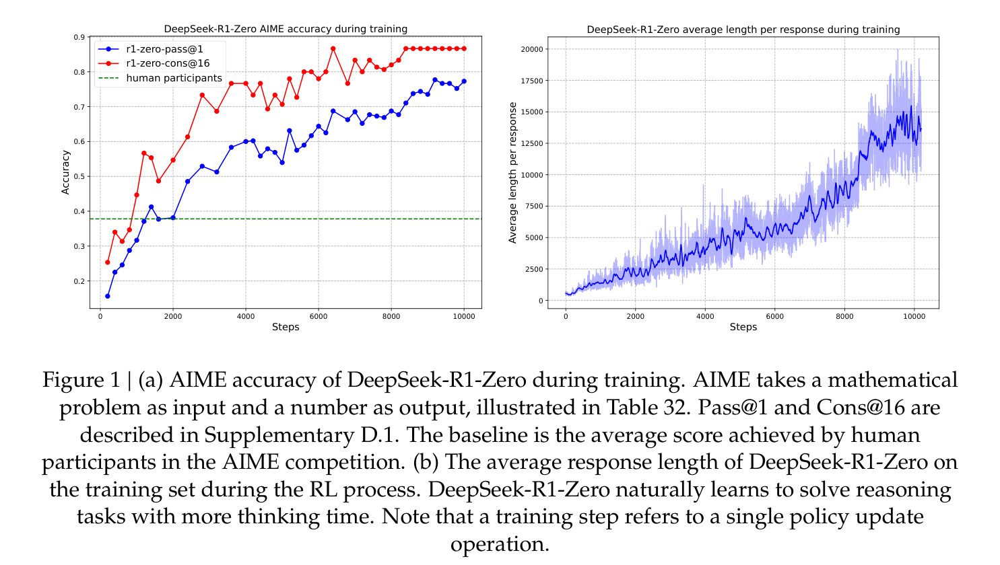</p> ??? Cropped from DeepSeek R1 paper (arxiv 2501.12948), Figure 1. --- class: center, middle <h1><span style="background-color: #7CB56B; color: #FFFFFF; padding: 8px 16px;">DEMO — a scratchpad beats a direct answer</span></h1> <p style="margin-top: 16px; font-size: 15px; color: #5C5750;"><code>notebooks/01_build_a_reasoning_model_r1_from_scratch.ipynb</code> · §0 Foundations</p> <p style="margin-top: 16px; font-size: 18px;">Two tiny models on 1-digit addition — one answers <strong>directly</strong>, one gets a <strong><think> scratchpad</strong>. The scratchpad wins, measured on your laptop.</p> <p style="margin-top: 12px; font-size:14px; color:#5C5750;"><strong>Recap:</strong> intermediate tokens aren't decoration — they're <em>computation</em>. That single result is why reasoning models exist.</p> --- ## The 5-stage recipe <div style="display: flex; justify-content: center; align-items: stretch; gap: 8px; margin: 44px 0 24px;"> <div style="background:#FFFFFF;border:2px solid #000;padding:14px 8px;width:148px;text-align:center;"> <div style="font-size:11px;color:#5C5750;letter-spacing:0.05em;">STAGE 1</div> <h4 style="margin:6px 0;color:#000;font-size:15px;">Pretrain</h4> <p style="font-size:11px;color:#5C5750;margin:0;">base model</p> </div> <div style="font-size:22px;color:#000;align-self:center;">→</div> <div style="background:#FBEAE7;border:2px solid #000;padding:14px 8px;width:148px;text-align:center;"> <div style="font-size:11px;color:#5C5750;letter-spacing:0.05em;">STAGE 2</div> <h4 style="margin:6px 0;color:#000;font-size:15px;">Cold-start SFT</h4> <p style="font-size:11px;color:#5C5750;margin:0;">teach the format</p> </div> <div style="font-size:22px;color:#000;align-self:center;">→</div> <div style="background:#FEF8E6;border:2px solid #000;padding:14px 8px;width:148px;text-align:center;"> <div style="font-size:11px;color:#5C5750;letter-spacing:0.05em;">STAGE 3</div> <h4 style="margin:6px 0;color:#000;font-size:15px;">RL · GRPO</h4> <p style="font-size:11px;color:#5C5750;margin:0;">reward correctness</p> </div> <div style="font-size:22px;color:#000;align-self:center;">→</div> <div style="background:#EEF5EC;border:2px solid #000;padding:14px 8px;width:148px;text-align:center;"> <div style="font-size:11px;color:#5C5750;letter-spacing:0.05em;">STAGE 4</div> <h4 style="margin:6px 0;color:#000;font-size:14px;">Rejection-SFT</h4> <p style="font-size:11px;color:#5C5750;margin:0;">self-made data</p> </div> <div style="font-size:22px;color:#000;align-self:center;">→</div> <div style="background:#E8F1F9;border:2px solid #000;padding:14px 8px;width:148px;text-align:center;"> <div style="font-size:11px;color:#5C5750;letter-spacing:0.05em;">STAGE 5</div> <h4 style="margin:6px 0;color:#000;font-size:15px;">Distillation</h4> <p style="font-size:11px;color:#5C5750;margin:0;">shrink the student</p> </div> </div> <div class="box" style="text-align:center;">Base → cold-start SFT → reasoning RL (GRPO) → rejection-sampling SFT → distillation. <strong>Our notebook runs all five on a toy task.</strong></div> --- ## GRPO — the 30-second intuition <div style="display: flex; justify-content: center; align-items: stretch; gap: 10px; margin: 32px 0;"> <div style="background: #FBEAE7; border: 2px solid #000000; padding: 16px; border-radius: 0px; text-align: center; width: 120px;"> <div style="font-size: 1.8em; margin-bottom: 8px; color: #E86B5A;">1</div> <h4 style="margin: 8px 0; color: #000000; font-weight: 600; font-size: 13px;">Ask G times</h4> <p style="font-size: 11px; color: #5C5750; margin: 0;">same question, e.g. G = 16</p> </div> <div style="font-size: 24px; color: #2A2825; align-self: center;">→</div> <div style="background: #FEF8E6; border: 2px solid #000000; padding: 16px; border-radius: 0px; text-align: center; width: 120px;"> <div style="font-size: 1.8em; margin-bottom: 8px; color: #F5C542;">2</div> <h4 style="margin: 8px 0; color: #000000; font-weight: 600; font-size: 13px;">Score each</h4> <p style="font-size: 11px; color: #5C5750; margin: 0;">simple rules: right? formatted?</p> </div> <div style="font-size: 24px; color: #2A2825; align-self: center;">→</div> <div style="background: #EEF5EC; border: 2px solid #000000; padding: 16px; border-radius: 0px; text-align: center; width: 120px;"> <div style="font-size: 1.8em; margin-bottom: 8px; color: #7CB56B;">3</div> <h4 style="margin: 8px 0; color: #000000; font-weight: 600; font-size: 13px;">Advantage</h4> <p style="font-size: 11px; color: #5C5750; margin: 0;">vs. the group average</p> </div> <div style="font-size: 24px; color: #2A2825; align-self: center;">→</div> <div style="background: #E8F1F9; border: 2px solid #000000; padding: 16px; border-radius: 0px; text-align: center; width: 120px;"> <div style="font-size: 1.8em; margin-bottom: 8px; color: #5B9BD5;">4</div> <h4 style="margin: 8px 0; color: #000000; font-weight: 600; font-size: 13px;">Nudge policy</h4> <p style="font-size: 11px; color: #5C5750; margin: 0;">↑ above avg, ↓ below avg</p> </div> </div> <div style="background: #FEF8E6; border: 2px solid #000000; border-radius: 0px; padding: 16px; margin-top: 8px; text-align: center;"> No value net. No human rater. The <strong>group is the baseline</strong>. </div> --- ## Why no critic? <div style="display: grid; grid-template-columns: 1fr 1fr; gap: 24px; margin: 24px 0;"> <div style="background: #FBEAE7; padding: 16px; border: 2px solid #000000; border-radius: 0px;"> <h4 style="margin-top: 0; color: #000000;">PPO (classic RL)</h4> <ul style="font-size: 14px; color: #2A2825;"> <li><strong>Baseline:</strong> learned value model (extra NN)</li> <li><strong>Networks trained:</strong> policy + value</li> <li><strong>Memory:</strong> ~2×</li> <li><strong>Reward source:</strong> learned reward model (usually)</li> </ul> </div> <div style="background: #EEF5EC; padding: 16px; border: 2px solid #000000; border-radius: 0px;"> <h4 style="margin-top: 0; color: #000000;">GRPO (DeepSeek)</h4> <ul style="font-size: 14px; color: #2A2825;"> <li><strong>Baseline:</strong> mean reward of the group</li> <li><strong>Networks trained:</strong> policy only</li> <li><strong>Memory:</strong> ~1×</li> <li><strong>Reward source:</strong> rule-based (correct? formatted?)</li> </ul> </div> </div> <p class="src">Half the moving parts. No reward hacking from a learned critic.</p> --- ## GRPO in one picture <p>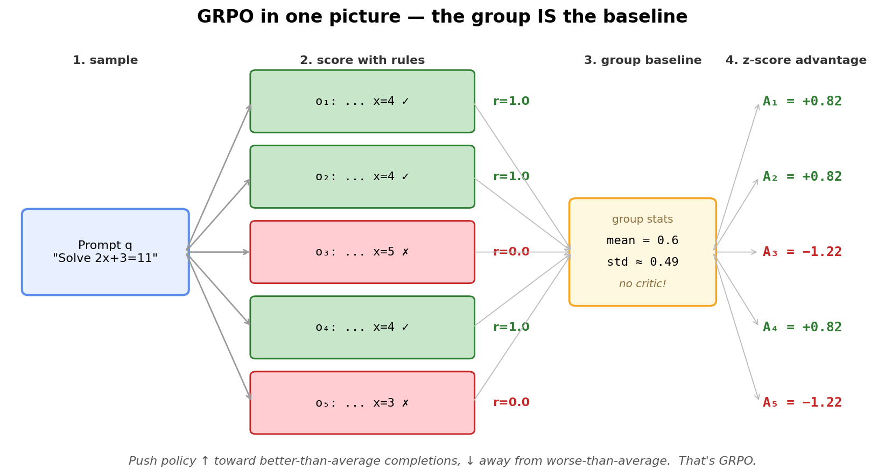</p> <p class="src"><em>One prompt → G rollouts → rule-based rewards → z-score advantages.</em></p> --- ## The formal objective <p>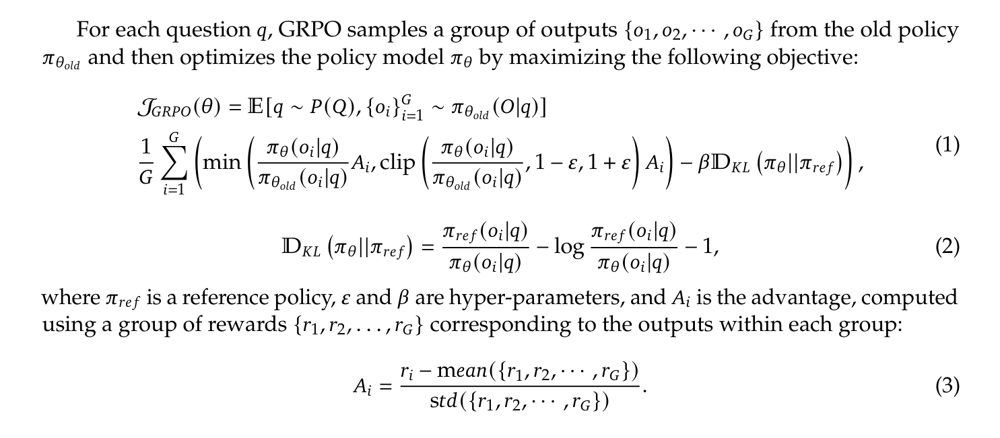</p> <div style="background: #FEF8E6; border: 2px solid #000000; border-radius: 0px; padding: 12px; margin-top: 8px; text-align: center; font-size: 15px;"> Clipped PPO-style update — but the advantage <code>Â</code> is just the <strong>z-score of the group rewards</strong>. That's the whole trick. </div> ??? Cropped from DeepSeek R1 paper (arxiv 2501.12948), §2.2.1 eqs (1)–(3). --- class: center, middle <h1><span style="background-color: #7CB56B; color: #FFFFFF; padding: 8px 16px;">DEMO — cold-start SFT → GRPO from scratch</span></h1> <p style="margin-top: 16px; font-size: 15px; color: #5C5750;"><code>01_build_a_reasoning_model_r1_from_scratch.ipynb</code> · §3 cold-start · §4 GRPO</p> <p style="margin-top: 16px; font-size: 18px;">Teach the <code><think>…</think><answer>…</answer></code> format, then reward correctness. No critic, no value network, no human labels.</p> <p style="margin-top: 12px; font-size:14px; color:#5C5750;"><strong>Recap:</strong> cold-start locks the shape (answers still mostly wrong); GRPO makes the pass-rate <em>climb</em> — the group is the baseline.</p> --- ## Distillation results <p>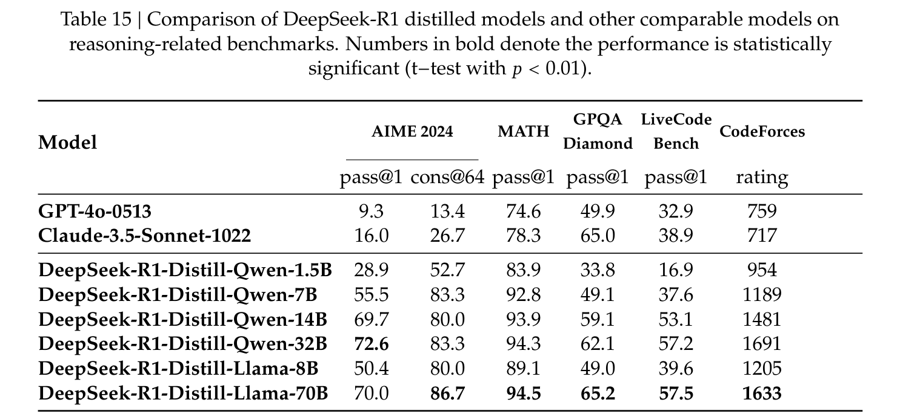</p> ??? Cropped from DeepSeek R1 paper (arxiv 2501.12948), Table 15. A small dense student keeps most of the skill. --- class: center, middle <h1><span style="background-color: #7CB56B; color: #FFFFFF; padding: 8px 16px;">DEMO — amplify & compress</span></h1> <p style="margin-top: 16px; font-size: 15px; color: #5C5750;"><code>01_build_a_reasoning_model_r1_from_scratch.ipynb</code> · §5 rejection-SFT · §6 distillation</p> <p style="margin-top: 16px; font-size: 18px;">Use the RL'd model as a <strong>data factory</strong> (generate → keep correct → fine-tune), then pour the skill into a <strong>~7× smaller student</strong>.</p> <p style="margin-top: 12px; font-size:14px; color:#5C5750;"><strong>Recap:</strong> the pass-rate jumps again with no new training signal — just better data — and survives compression.</p> --- ## The payoff — one metric, the whole recipe <div style="display: flex; align-items: flex-end; gap: 12px; margin: 32px 0 0;"> <div style="display: flex; flex-direction: column; align-items: center; justify-content: space-between; width: 40px; height: 90px;"> <span style="font-size: 20px; line-height: 1;">↑</span> <span style="font-size: 10px; color: #5C5750; writing-mode: vertical-rl; transform: rotate(180deg); text-transform: uppercase; letter-spacing: 0.05em;">pass-rate</span> </div> <div style="flex: 1; display: grid; grid-template-columns: repeat(4, 1fr); gap: 12px; align-items: end; height: 90px; border-left: 2px solid #000000; border-bottom: 2px solid #000000; padding-left: 12px;"> <div style="background: #FBEAE7; border: 2px solid #000000; border-bottom: none; height: 30px;"></div> <div style="background: #FEF8E6; border: 2px solid #000000; border-bottom: none; height: 55px;"></div> <div style="background: #EEF5EC; border: 2px solid #000000; border-bottom: none; height: 85px;"></div> <div style="background: #E8F1F9; border: 2px solid #000000; border-bottom: none; height: 85px;"></div> </div> </div> <div style="display: flex; gap: 12px; margin-top: 8px; padding-left: 52px;"> <div style="flex: 1; text-align: center;"><h4 style="margin: 0 0 4px; color: #000000; font-size: 14px;">Cold-start</h4><p style="font-size: 12px; color: #5C5750; margin: 0;">format</p></div> <div style="flex: 1; text-align: center;"><h4 style="margin: 0 0 4px; color: #000000; font-size: 14px;">GRPO</h4><p style="font-size: 12px; color: #5C5750; margin: 0;">skill</p></div> <div style="flex: 1; text-align: center;"><h4 style="margin: 0 0 4px; color: #000000; font-size: 14px;">Reject-SFT</h4><p style="font-size: 12px; color: #5C5750; margin: 0;">stability</p></div> <div style="flex: 1; text-align: center;"><h4 style="margin: 0 0 4px; color: #000000; font-size: 14px;">Distill</h4><p style="font-size: 12px; color: #5C5750; margin: 0;">efficiency (smaller)</p></div> </div> <p style="text-align: center; color: #5C5750; font-size: 13px; margin-top: 8px;"><em>(Exact numbers print live in the notebook — that's the demo.)</em></p> --- ## This is still how it's done The same recipe — **GRPO + RL from verifiable rewards** — is how 2026 frontier reasoning models (GPT-5.6, Claude Opus 5, Gemini 3.x) are trained. <div style="background: #FEF8E6; border: 2px solid #000000; border-radius: 0px; padding: 16px; margin-top: 16px;"> Scaled up massively. <strong>Not replaced.</strong> </div> --- class: center, middle <div style="font-size: 4em; color: #ddd; font-family: 'IBM Plex Sans';">03</div> # Working with Reasoning Models *The practical API & engineering half* <p style="font-size: 15px; color: #5C5750; margin-top: 12px;">One fact drives every decision: the model spends hidden tokens thinking before it answers.</p> ??? Ten slides of the day-job: parameters, code, and engineering decisions across OpenAI, Anthropic & Google. Grounded in current official docs. --- ## 1 · The depth dial — one idea, three knobs <table style="width:100%; font-size:13px; border:2px solid #000;"> <tr style="background:#000;color:#fff;"><th style="padding:6px;">OpenAI</th><th style="padding:6px;">Anthropic</th><th style="padding:6px;">Google</th></tr> <tr><td style="padding:8px;border:1px solid #000;"><code>reasoning={"effort": ...}</code><br>none · low · medium · high · xhigh · max</td><td style="padding:8px;border:1px solid #000;"><code>thinking={"type":"adaptive"}</code><br>+ <code>output_config={"effort": ...}</code></td><td style="padding:8px;border:1px solid #000;"><code>thinking_level</code><br>minimal · low · medium · high</td></tr> </table> - Higher effort = more thinking tokens = better on hard tasks, slower + pricier; models scale **down** on easy inputs automatically - Anthropic separates *whether* it thinks (`thinking`) from *how hard* (`effort`) — don't confuse them - `budget_tokens` is **deprecated / 400** on newest Claude → use adaptive + effort - `max_tokens` is the only **hard** ceiling; effort/budget are soft guidance <p class="src">OpenAI reasoning guide · Anthropic thinking docs · Gemini thinking docs.</p> --- ## 2 · Streaming: visible vs summarized - You **never get the raw chain of thought** — only an opt-in *summary* - OpenAI `reasoning.summary` (auto/concise/detailed) · Anthropic `display` (summarized/omitted) · Gemini `thinking_summaries` - Streaming order is always: **thinking deltas → signature → answer text** - `display: "omitted"` cuts time-to-first-answer-token but **not** cost - Summaries come from a *separate* model; the answering model never sees them <div style="background:#E8F1F9;border:2px solid #000;padding:8px;margin-top:10px;font-family:'JetBrains Mono';font-size:13px;"> content_block_delta(thinking_delta…) → signature_delta → content_block_delta(text_delta…) </div> --- ## 3 · Reasoning tokens are billed as output tokens The single most important cost fact — **hidden thinking still costs money.** - Read it: OpenAI `reasoning_tokens` · Anthropic `thinking_tokens` · Gemini `total_thought_tokens` - You pay for the **full** thinking even when you only see a short summary - Reserve headroom (OpenAI suggests **~25k**) or a truncated run bills you for thinking with **no answer** - Budget = f(effort level, task complexity) — **measure, then tune down** <div style="background: #FBEAE7; border: 2px solid #000000; padding: 10px; margin-top: 12px; font-size:14px;"> A response that hits <code>max_output_tokens</code> mid-thought comes back <code>incomplete</code> — and you're still charged. </div> --- ## 4 · Multi-turn: carry the reasoning back Reasoning state does **not** follow the conversation automatically. - **Anthropic:** echo every `thinking` block back *unchanged* (incl. `redacted_thinking`) during tool use — edit/reorder/drop → **400** - **OpenAI:** `previous_response_id` (stateful) *or* replay `encrypted_content` (stateless/ZDR); `reasoning.context` picks scope - **Gemini:** resend `thought` signatures verbatim in stateless mode - Chat Completions drops reasoning items → prefer the **Responses API** for agentic loops <div style="background:#FEF8E6;border:2px solid #000;padding:8px;margin-top:10px;font-family:'JetBrains Mono';font-size:12px;"> second = responses.create(model="gpt-5.6", previous_response_id=first.id, input="Now patch it.") </div> --- ## 5 · Tool use with reasoning - A tool loop is **one assistant turn**: model reasons → calls tools → answers - **Anthropic:** pick thinking mode per turn (can't toggle mid-turn); **forced tool choice needs *adaptive* thinking** - **Interleaved thinking** = reason *between* tool calls (adaptive = automatic; manual = beta header) - **OpenAI:** echo reasoning items + function-call items back every hop; mind the `phase` field - Production pattern: **reasoning model plans, cheap model executes** <div style="background:#EEF5EC;border:2px solid #000;padding:8px;margin-top:10px;font-size:13px;"> thinking → tool → <strong>thinking</strong> → tool → answer (interleaved beats one-shot for long agentic runs) </div> --- ## 6 · Structured outputs / JSON - OpenAI Structured Outputs (`json_schema`, `strict: true`) **works** with reasoning models - Strict schema requires: all fields `required`, `additionalProperties: false` - Biggest break = **truncation**: thinking eats the budget, JSON stops mid-object → give it headroom - Anthropic path is **tool-use schemas** (Pydantic in this course); forced tool choice needs adaptive thinking - Keep schemas **byte-stable** so they stay in the prompt cache <div style="background:#FBEAE7;border:2px solid #000;padding:8px;margin-top:10px;font-size:13px;"> Guard every structured call against <code>incomplete</code> / parse failure. </div> --- ## 7 · Prompt caching interactions Caching is where reasoning config quietly wrecks your hit rate. - Cache hits need **byte-identical prefixes**; OpenAI cached input ≈ **0.1×** cost - **Anthropic renders thinking config/effort into the prompt** → changing it **breaks the cache** - Lock **one** effort/budget per cached conversation; don't tune it mid-thread - During tool loops, thinking blocks cache *with* tool results (then bill as input on read) - Long reasoning runs outlive the 5-min cache → use the **1-hour TTL** --- ## 8 · Latency & throughput - To go faster: **drop effort first** — it shrinks thinking + answer together - **Route by task:** reasoning model for hard/ambiguous, fast model for well-defined - Stream, and use `display:"omitted"` to start the answer sooner (cost unchanged) - Budgets > ~32k, or `max_tokens` > 21,333 → **stream and/or batch** to dodge timeouts - Parallelize independent calls; spend high effort only where it pays <p class="src">Latency ↔ effort is measurable — see the reproducibility notebook.</p> --- ## 9 · Common pitfalls (the 400 club) <ul style="font-size:15px; line-height:1.7;"> <li><strong>Truncation</strong> is #1 — thinking exhausts the budget → incomplete output, still billed</li> <li>Newest Claude **rejects custom `temperature`/`top_p`/`top_k`** and any response **prefill**</li> <li>Never **edit, reorder, or drop** thinking blocks (incl. `redacted_thinking`) → 400</li> <li>Don't say <em>"think step by step"</em> — over-prompting CoT hurts; be direct & zero-shot</li> <li>OpenAI: **developer** (not system) messages; Anthropic: migrate off `budget_tokens`</li> </ul> --- ## 10 · Production pre-flight checklist <div style="display:grid;grid-template-columns:1fr 1fr;gap:6px 20px;font-size:14px;margin-top:10px;"> <div>☐ Right tool for the task?</div> <div>☐ Effort chosen & **pinned**?</div> <div>☐ Token headroom reserved (~25k)?</div> <div>☐ Cost instrumented (log reasoning tokens)?</div> <div>☐ State handling correct per provider?</div> <div>☐ Tool-loop mode set per turn?</div> <div>☐ Streaming + timeout strategy?</div> <div>☐ Cache byte-stable, config fixed?</div> <div>☐ Structured output guarded vs truncation?</div> <div>☐ Prompts direct, zero-shot, no CoT padding?</div> </div> <div style="background: #FEF8E6; border: 2px solid #000000; padding: 10px; margin-top: 14px; font-size:14px;"> Model choice → effort pinned → headroom → cost logged → state echoed → cache stable. </div> --- class: center, middle <h1><span style="background-color: #7CB56B; color: #FFFFFF; padding: 8px 16px;">DEMO — provider reasoning controls, hands-on</span></h1> <p style="margin-top: 16px; font-size: 15px; color: #5C5750;"><code>provider_openai_thinking_parameters.ipynb</code> · <code>provider_anthropic_extended_thinking.ipynb</code></p> <p style="margin-top: 16px; font-size: 18px;">Dial <code>reasoning.effort</code> across levels; drive Claude adaptive/extended thinking. Watch tokens, latency, and answer quality move together.</p> <p style="margin-top: 12px; font-size:14px; color:#5C5750;"><strong>Recap:</strong> same model, dial the depth to the task — the knob is now universal; the off-switch is disappearing.</p> --- class: center, middle <h1><span style="background-color: #7CB56B; color: #FFFFFF; padding: 8px 16px;">DEMO — cheap vs flagship, reproducibly</span></h1> <p style="margin-top: 16px; font-size: 15px; color: #5C5750;"><code>notebooks/02_reproducibility_cheap_vs_flagship.ipynb</code></p> <p style="margin-top: 16px; font-size: 18px;">Fix a **seed**, match a flagship with a **cheaper** model, and **count the cost** — the engineering half of "which model do I ship?"</p> <p style="margin-top: 12px; font-size:14px; color:#5C5750;"><strong>Recap:</strong> the expensive model isn't always the right call — measure per-task cost, not per-token price.</p> --- ## Recap — the three movements - **Foundations** — output = reasoning + answer; reach for it on hard, ambiguous, agentic work - **The R1 paper** — cold-start SFT → GRPO on verifiable rewards → reject-SFT → distill; we rebuilt it - **Working with them** — pin effort, budget for hidden tokens, echo reasoning state, guard truncation <div style="background: #FEF8E6; border: 2px solid #000000; border-radius: 0px; padding: 16px; margin-top: 16px;"> The recipe is public and the knobs are in your hands. Now go ship one. </div> --- class: center, middle # Questions? <p style="color: #5C5750; margin-top: 16px;">DeepSeek R1 paper — arxiv.org/pdf/2501.12948 · interactive guide: <code>guide/reasoning-training-guide.html</code></p> <p style="color: #5C5750;">Notebooks: <code>01_build_a_reasoning_model_r1_from_scratch</code> · <code>02_reproducibility_cheap_vs_flagship</code> · provider deep-dives</p> <p style="color: #5C5750;">Current model rankings/pricing: artificialanalysis.ai/models</p> Lucas Soares · O'Reilly Live Training